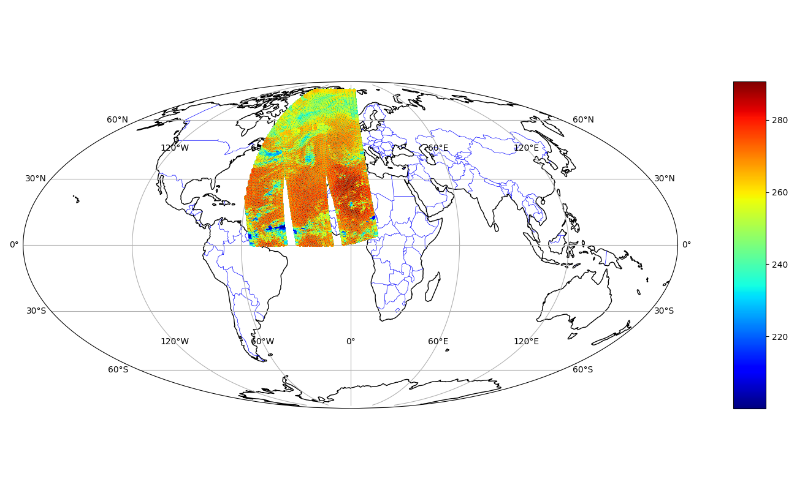

Utility functions
In addition to data querying and conversion, odb4py provides a set of utility functions to simplify common operations on ODB datasets. These functions are available in the core and info modules.
Geospatial functions
The odb_geopoints function extracts commonly used geospatial and temporal fields from an ODB database, including:
Station identifier (statid)
Latitude and longitude
Altitude and pressure
Date and time
Observation value
This function provides a convenient way to retrieve standard observation metadata without writing explicit SQL queries (equivalent to the odbsql when the ‘geo’ argument is gievn as output format).
The returned geopoints are stored in a Python dictionary, similarly to odb_dict.
Example
# -*- coding: utf-8 -*-
# Import
from odb4py.core import odb_geopoints
# Path to ODB
dbpath = "/path/to/CCMA" # ECMA.<obstype>
# Open ODB
conn=odb_open ( dbpath )
# Get the geopoints
gp = conn.odb_geopoints(database= dbpath )
The odb_geopoints function provides several optional arguments to refine the extraction:
condition : Adds a filtering condition to the query (equivalent to a SQL WHERE clause).
unit : Specifies the unit for latitude and longitude values (degrees or radians ). Possible values are “degrees” (default) or “radians”.
extent : Restricts the extraction to a sub-domain instead of the full spatial domain.
pbar : Enables a progress bar during data extraction.
verbose : Enables more detailed output during execution.
# -*- coding :utf-8 -*-
# Import
from odb4py.core import odb_geopoints
# Path to ODB
dbpath = "/path/to/ECMA.iasi"
# Open ODB
conn=odb_open ( dbpath )
# Get the geopoints
data=conn.odb_geopoints (database = dbpath ,
condition ="vertco_reference_1@body > 100 AND vertco_reference_1@body<= 500 AND obsvalue is not NULL" ,
unit = "degrees",
extent = [-60, 80, 0., 80.], # Extent is given ALWAYS in degrees even the unit is radians [lon1, lon2, lat1, lat2 ]
pbar = True ,
verbose = True )
# Get lat/lon and obsvalue
lats=df["degrees(lat)" ]
lons=df["degrees(lon)" ]
obs =df["obsvalue@body"]
# Plot
fig = plt.figure(figsize=(13, 8))
ax = fig.add_subplot(111,projection=ccrs.Mollweide())
ax.coastlines()
ax.set_global()
ax.add_feature(cfeature.BORDERS, linewidth=0.5, edgecolor='blue')
ax.gridlines(draw_labels=True)
sc=plt.scatter ( lons, lats ,c=obs , cmap=plt.cm.jet ,marker='o',s=10, zorder =111,transform=ccrs.PlateCarree() )
plt.title( "IASI brightness temperature (Channels 100 to 500 ). Nobs = 1852014 \n Datetime :20240623 00h00 UTC" )
divider = make_axes_locatable(ax)
ax_cb = divider.new_horizontal(size="5%", pad=0.9, axes_class=plt.Axes)
fig.add_axes(ax_cb)
plt.colorbar(sc, cax=ax_cb)
plt.tight_layout()
plt.savefig("arpege_iasi_subdomain.png")
{kind=link}

Example:IASI satellite from an ARPEGE ODB(100 < Channel < 500) Extent [lon1,lon2,lat1,lat2]=[-60, 80, 0., 80.].
The other function is odb_gcdist. The function computes great-circle distances between pairs of latitude/longitude coordinates.
The implementation follows the same approach as used in the sp R package, ensuring consistency with existing scientific workflows.
It does not rely on the classical Haversine formula, but instead uses a more accurate formulation for geodetic distances.
# -*- coding :utf-8 -*-
# Import
from odb4py.core import odb_geopoints , odb_gcdist
# Path to an MetCOop ODB
dbpath = "/path/metcoop/ODB/CCMA"
# Open ODB
conn=odb_open ( dbpath )
# Execute the query
data=conn.odb_geopoints ( database =dbpath ,
condition ="obstype== 1 AND varno == 39 ", # We need all the T2m points from SYNOP
unit= "degrees" ,
pbar = True ,
verbose= True )
# Convert to np arrays
lats=np.array(data["degrees(lat)" ])
lons=np.array(data["degrees(lon)" ])
# Create the two other arrays
lons2=lons
lats2=lats
# Compute the distances matrix
distmat = odb_gcdist( lons ,lats , lons2 , lats2 )
print("Matrix type :" , type(distmat))
print("Matrix shape :" , distmat.shape )
print("Average distance :" , np.mean( distmat ))
# Close
conn.odb_close()
Matrix type : <class 'numpy.ndarray'>
Matrix shape : (1249, 1249)
Average distance : 901.1969545352
ODB metadata utilities (info)
The info module provides functions to inspect the structure and available content of an ODB database.
Three function are contained in the module : odb_tables, odb_varno and odb_functions.
Note
The information returned by these functions is derived from the ARPEGE/IFS cycle 43t2 source code and may be subject to additions or modifications in the most recent cycles.
# -*- coding :utf-8 -*-
# Import
from odb4py.info import odb_tables ,odb_varno , odb_functions
# These function are independant and doesn't need an ODB connection !
tabs = odb_tables() # Returns a list
varno= odb_varno () # Returns a list
funcs= odb_functions() # Returns a disctionary {varno :( shortname , description ) }
print("Tables :\n" , tabs )
print("Functions :\n" , funcs )
# Print by key/value
print("varno , ( shortname , description ) :\n")
for k , v in varno.items():
print( k , v )
Tables :
('desc', 'ddrs', 'hdr', 'body', 'index', 'poolmask', 'errstat', 'bufr', 'bufr_tables', 'bufr_tables_desc', 'aeolus_auxmet', 'aeolus_hdr', 'aeolus_l2c', 'resat', 'rtovs', 'rtovs_body', 'rtovs_mlev', 'rtovs_pred', 'rtovs_slev', 'sat', 'satem', 'satob', 'scatt', 'scatt_body', 'smos', 'ralt', 'ssmi', 'ssmi_body', 'ssmi_mlev', 'ssmi_slev', 'timeslot_index', 'update', 'limb', 'resat_averaging_kernel', 'radar', 'radar_body', 'radar_station', 'surfbody_feedback', 'modsurf', 'radiance', 'allsky', 'co2_sink', 'cloud_sink', 'collocated_imager_information', 'auxiliary', 'auxiliary_body', 'radiance_body', 'allsky_body', 'fcdiagnostic', 'gbrad', 'gbrad_body', 'gnssro', 'gnssro_body', 'ensemble', 'conv', 'conv_body', 'raingg', 'raingg_body', 'update_1', 'update_2', 'update_3', 'update_4', 'update_5', 'update_6', 'update_7', 'update_8', 'update_9', 'update_10', 'enkf_[1-$NUMAUX]', 'enda_[1-$NUMAUX]', 'surfbody_feedback_[1-$NUMAUX]', 'fcdiagnostic_body_[1-$NUMAUX]')
Functions :
('Ln', 'Lg', 'ftrunc', 'Cot', 'ACot', 'ACot2', 'Coth', 'Asinh', ...... , 'maxloc', 'Conv_llu2')
Varno , (shortname , description ) :
3 ('u', 'upper air u component')
4 ('v', 'upper air v component')
1 ('z', 'geopotential')
57 ('dz', 'thickness')
29 ('rh', 'upper air rel. humidity')
9 ('pwc', 'precipitable water content')
58 ('rh2m', '2m rel. humidity')
2 ('t', 'upper air temperature (K)')
59 ('td', 'upper air dew point (K)')
39 ('t2m', '2m temperature (K)')
40 ('td2m', '2m dew point (K)')
11 ('ts', 'surface temperature (K)')
...